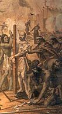

|
French version
HOME
ORIGINS
ENGAGÉ
MARRIAGE
TRAVEL
FAMILY
DEATH
SÉBASTIENNE
DESCENDANTS
SOURCES

SIGN
MY GUEST
BOOK
| |
|
|
|
Mathieu,
A Volunteer |
|
VOUNTEERS
OR “THIRTY-SIX MONTHS”
Volunteers
were young people, especially tradesmen. They hardly had a future in
France because the trades there were overloaded and the title of
“master” which gave the right to own one’s own business had become
less and less accessible. Volunteers
were signed up for three years according to the recruiters who acted on
behalf of the landlords or religious communities in seeking a workforce
or people to settle in their holdings.
The recruiter was responsible for everything: cash advances for
the trip, transportation expenses, food.
Volunteers earned an annual salary of 20 to 150 livres,
according to their skill. At
the end of their service they were free to stay in the country or return
to France.
Mathieu
Choret arrived in New France in 1643 with a three-year contract as a
volunteer for the Jesuits.
The first
time the documents mention his presence in the country, he is in
Trois-Rivieres working as a domestic servant or as a volunteer for the
Jesuit accounts. He earned
100 livres a year.
According to the “Jesuit Records”, he was there from November
1645, replacing the colonist Pierre Gonthier who had returned to Quebec
on the twelfth. Brought there by Robert Hache to cook
“for our brothers who had too much sadness”, Gonthier
probably stayed in the area of Hochelaga (his marriage contract
indicates he was living in Montreal in 1647).
|
|
|
|
TROIS-RIVIÈRES
When
Champlain returned to Canada after the Kirke brothers had taken Quebec,
he established a new fort and fur trading post thirty leagues from
Quebec. In 1634 he enlisted
Laviolette, an employee of the Company of One Hundred Associates, to
sail to the mouth of the St. Maurice river, with enough men and
materials on board to build a settlement.
The Jesuit fathers Jean de Brébeuf and Antoine Daniel were part
of this group.
From its
very founding, the Jesuits had a home in Trois-Rivieres where Mathieu
worked in 1645.
|
|
|
|
THE
COMPANY OF JESUS
In the
beginning of the 17th century the French catholic church was
fraught with change. The fear
of hell was stronger than ever; Christians had a duty to combat Satan’s
work on all fronts. The elite saw the world as they knew it coming to a close.
There were very strong eschatological undercurrents (reform,
Protestantism. . . ). The
world was on the road to ruin, the final judgment was approaching.
If pagans were not converted, Christians would go to hell.
The whole world needed to be converted for the elite were
accountable to God for all souls.
With this
rationale the Jesuits, a religious community founded in 1540 by Ignatius
de Loyola, expanded throughout the world.
The Jesuits perceived themselves to be God’s soldiers.
Their members were the best recruits, intelligent, eloquent men
capable of learning native languages and making as many converts as
possible. They arrived in Canada in 1625.
They reported all the accomplishments of their mission in their
annals. These documents were
sent to their superior in France where they were published.
The annals were very successful in the salons where their exoticism
created a sensation. The
“Jesuit Records” are a goldmine for historians.
When one reads them it is apparent that one thing guided their
actions: to proselytize among the natives and to baptize them.
|
|

|
For this
they would endure everything; death after torture was their most intense
desire. Martyrdom would guarantee them a heavenly reward.
Today one would characterize them as
fundamentalists.
Other times,
other mores. . . .
|

|
|
|
|
WHY
LEAVE FRANCE?
Where is
Mathieu in all of this?
Why did he
decide to volunteer for the Jesuits for thirty six months in Canada?
He was most certainly considered a good Catholic, for the Jesuits
chose only the best as volunteers. They did not wish to give bad examples
to the natives whom they wanted so much to convert.
In
Mathieu’s time France was plagued by numerous wars with England, Spain,
the Low Countries and others. The
Thirty Years War had begun in 1618. Several
regions of France had been devastated in the course of battles.
Mathieu,
born at the beginning of the 1620s, had lived only during wartime.

During this
troubled time, finances were precarious because taxes were not often paid.
Royal representatives and landlords seized the peasants’ goods.
Popular uprisings in the countryside and the villages added to the
general confusion. The nearly
continual state of war fostered epidemics which decimated the population.
France was also shaken by a series of popular uprisings aimed at
protesting the absolutism of royal authority.
This would lead to a movement called the “Fronde” in 1648.
In brief,
life in France was not pleasant and great poverty drove many young people
onto the ships for New France. No
doubt on the one hand there was a dream, a picture of the beautiful
New World that spoke of liberty, extraordinary hunting and fishing,, and
huge forests, and on the other hand the brutal customs of the natives.
The simple
taste for adventure and the attraction of liberty sufficed.
Under the old regime in France, the father of the family had strict
rights over his children, notably in terms of marriage and setting up a
household. And families did not
hesitate to punish their disobedient children by imprisonment, often for
minor offenses. Considering that
majority was not reached until 25 years of age, emigration doubtless
became an interesting alternative for some young men.
Which
one of these reasons can explain Mathieu's choise, or was it perhaps some
of each? Or an entirely different reason that we will never know?
|
|
RETURN
TO FRANCE
At the end
of his three year contract Mathieu took ship for France on October 31,
1646 (Jesuit Journal). His
contract as volunteer included his round trip transportation costs.
Historians believe that before 1663, two thirds of the volunteers
chose to return to France.
Mathieu
Choret belonged to the one third of volunteers who decided to settle
permanently in Canada. But
to do that, he had to return to France to seek what he needed most to
succeed in his New World relocation: a wife.
There were hardly any women to
marry in Canada (the King’s Daughters would not arrive for another
twenty years), and Mathieu may have had a betrothed waiting for him. We
do not know. Considering the time required for crossing and the date of
his marriage, that may have been the case, or perhaps the choice of a
spouse happened quickly at that time (most marriages at the time were
arranged by the parents). We have no official proof, but it is
highly probable that Mathieu Choret was the first “volunteer” to
return to France to marry and then, to bring back his wife.
|
|

|
|